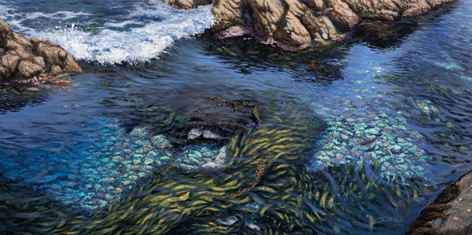
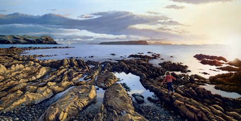
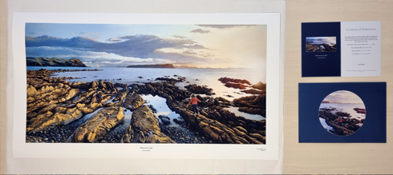
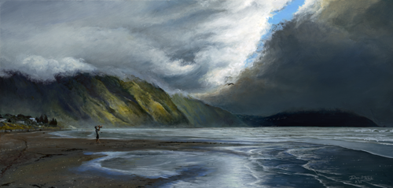
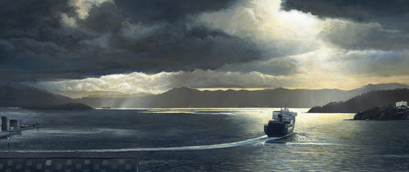
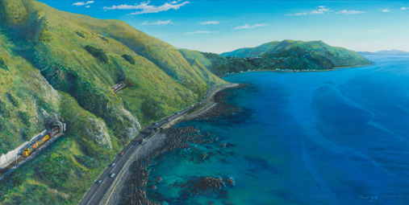
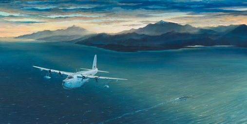
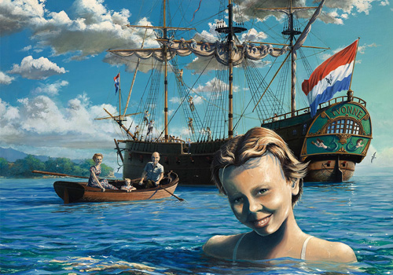
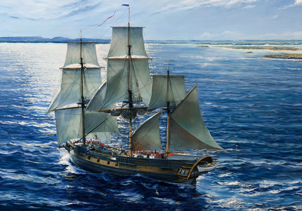
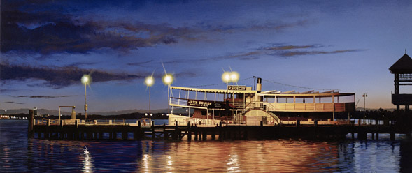

I have fond memories of sitting watching the waves come in and make the seaweed swirl around in a hypnotic way. Rock pool on the Wellington south coast.

Inspired by one of those classic moments, having fish'n chips on a Sunday evening whilst watching the sunset.
Limited edition of 30 giclée prints produced.


As a family, we went to Paekākāriki beach on a cloudy Sunday afternoon to run around on the sand. There was a moody sky with fantastic light on the hills, which was great inspiration for a painting.
The painting was finished when we first 'locked down' for the Covid-19 virus. There was going to be a solitary figure on the beach, but I felt that was too isolating in the current situation, so I changed it to parent and child making the most of a not so sunny day.

This painting received an honourable mention from Captain Jeanine Drummond, at the Australian Society of Marine Artists national online exhibition "Harbour Life", 1 Jul - 31 Jul 2022.
I was lucky enough to have a view of Wellington harbour at one workplace and was treated to some spectacular light & weather. I set out to capture one of my favourite moments, watching the Blue Bridge ferry MS Strait Feronia heading out as Wellington gears up for the day.
read more...Acrylics on board, this painting marks a turning point in my work, where I've used many translucent layers of paint to build up the sky and light. Always wanting to achieve a photo-like quality to my work, I still want to create something unique that can't be easily captured on camera.
My actual view at the time was cluttered with waterfront buildings. I removed them to create a serene view with just the top of the old waterfront sheds marking the wharf area. This allows the ferry to be the focal point as she gently turns to head out of the harbour.
As a final touch, I put my family on the top deck as we escape on holiday.

One of my favourite tracks around Wellington is the escarpment track from Paekākāriki to Pukerua Bay. If you get weather like what I've depicted here, it's an incredible view, with the wind drawing rivers of texture on the still sea.
Exhibited in the 2017 NZ Art Show, Wellington, New Zealand.

This piece was initially inspired by a flight I had back to Wellington from the South Island. I had a great view of the Kaikoura range and the sun setting behind them. The light was magic, creating a fantastic atmosphere around the mountains.
read more...I was aiming to put a solitary yacht in the foreground, but I had a growing feeling it would be tiny and lost. I also realised there was a great deal of sea with no point of interest to the painting.
Flicking through an RNZAF book I stumbled across an image of a Short Sunderland. I've always loved the classic lines of these aircraft and have fond memories of visiting one at MOTAT, Auckland.
Further research revealed that they flew out of Evans Bay, Wellington in the 1950's. This was the perfect focal point for my painting. I prefer to do my research first, then create the composition, but for this I allowed myself a little artistic licence to explore the 1950's period around Wellington.
I still wanted to put a ship in. To continue the 1950's theme, my research drew me to the RMS Rangitiki, a cargo/liner that was a frequent visitor to Wellington. That was the finishing touch to the painting.
Created for the 2017 NZ Art show.


A commissioned piece portraying the French Corvette Naturaliste off Jurien Bay, Western Australia, during the Baudin expedition in 1801.
The original artwork measures 150cm X 90cm.

Paddle Steamer Decoy at sunrise, berthed at the Mends St Jetty, South Perth.